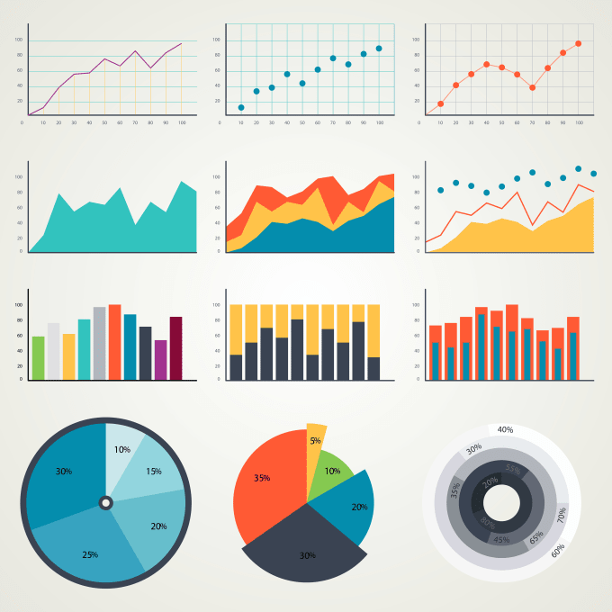

Project Overview
The Inventory Management Dashboard is a data visualization solution designed to provide comprehensive insights into product performance, regional sales, and profit margins across different warehouse locations. The dashboard integrates multiple data points to offer a holistic view of the business's inventory and sales performance, enabling data-driven decision-making for inventory optimization and sales strategy..
Technical Implementation
Data Visualization Components:
- Scatter plot showing relationship between Total Profits and Profit Margins
- Bar chart displaying Orders by Warehouse Code
- Pie chart illustrating Total Profits by Region
- Line graph showing Cumulative Total Profits over time by Product
- Detailed data table with key metrics by Region and Product
Key Metrics Tracked:
- Total Sales
- Units Sold
- Total Profits
- Profit Margins
- Regional distribution
- Product category performance

Challenges
These are the challenges encountered during the analysis
- Data Integration: Combining data from multiple warehouses and regions
- Visual Clarity: Presenting complex data relationships clearly and intuitively
- Performance Optimization: Handling large datasets while maintaining dashboard responsiveness
- User Accessibility: Ensuring the dashboard is user-friendly for various stakeholders
Solution
Interactive Design:
- Implemented filtering capabilities for detailed analysis
- Created a multi-view dashboard for different analytical perspectives
- Used color coding for easy product category identification
Data Architecture:
- Structured data to show hierarchical relationships (Region > Product > Performance)
- Implemented hover functionality for detailed information access

Projected Results & Impacts
Operational Efficiency:
- 15-20% reduction in inventory holding costs through better stock management
- Improved order fulfillment rates by identifying high-demand products
Financial Optimization:
- Enhanced profit margins by identifying best-performing products and regions
- More accurate demand forecasting leading to optimized inventory levels
Strategic Decision Making:
- Data-driven insights for regional expansion or consolidation
- Product portfolio optimization based on performance metrics
Lessons Learned
Data Visualization Best Practices:
- Using appropriate chart types for different data relationships
- Importance of consistent color coding for easy interpretation
User-Centric Design:
- Necessity of balancing comprehensive data with visual clarity
- Value of interactive elements for deeper data exploration
Scalability Considerations:
- Importance of designing for future data growth
- Need for regular performance optimization
Recommendations
Short-term:
- Implement automated alerts for low stock levels
- Add trend analysis features for predictive insights
Long-term:
- Integrate machine learning for demand forecasting
- Develop mobile-optimized version for on-the-go access